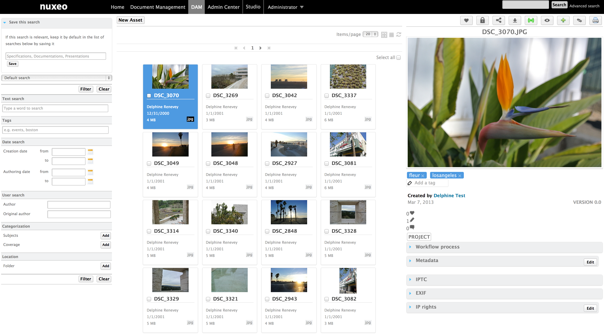
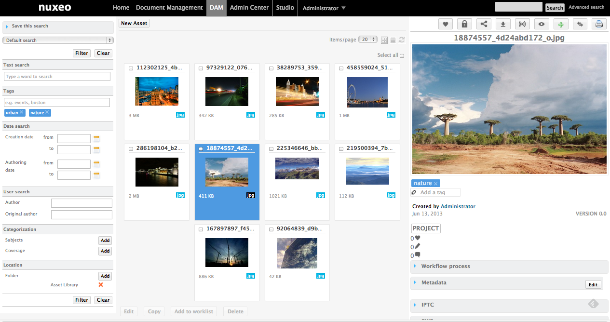

New features in DAM
DAM is customizable with Nuxeo Studio
Redesign from the ground up using ContentView, Layouts and widgets. It makes every part of DAM screen (Search panel, result panel, asset view) easy to customize using Nuxeo Studio.
- Define the Left Hand Side with your own search layout
- Define the layout for the fields displayed in the thumbnail
- Define the Right Hand Side data for the selected asset (view/edit, as toggable layout)
- Define the Bulk-edit layout
- Define toolbar buttons, add your own
- Define the document types DAM2 can handle
Browse all Assets from the Repository
All the assets of the repository are displayed (not just the one under "Media Library")

Back Navigation
We've enhanced the back navigation of your browser using HTML5 pushState.
Permlink available for any Asset
Every Asset now has an accessible and sharable permlink for you to share.
Use tags in searches
You can now add tags in your search form. Whether you're using the advanced search form, any faceted search, a content view query or a query operation. It works because we've added tag suppport to NXQL.

Search Panel
- Search criteria can be saved
- Search layout re-organized for better user friendly interface
- Search is triggered when user clicks "Filter" or "Clear"
- Rename "Keywords" with "Text Search"
- Search by location renamed
- New search by tags
- New search by creation date
- New search by Author
- New search by Original Author
- Search by Subjects with a new, better, interface
- Search by Coverage with a new, better, interface

Assets Browsing
- "New Asset" button:
- Choose among appropriate document types with different metadata
- Import with D&D
- Also in "List" view
- New "Items/Page" dropdown
- New "Refresh" button
- New "Select all" button
- New "Copy" button
- New "Add to worklist" button
Asset View
- New toolbar, with following buttons:
- Like
- Lock
- Permanent link
- Follow
- Preview
- Add to worklist
- Go To DM view
- New "Tags" feature
- Multiple tags
- Click on a tag to display the list of assets using it
- New "Creator/LifeCycle/Version" display
- New count of people who liked the document
- Smart "Comments" group: Displayed only if there is at least one comment
- Access to workflow actions directly from the DAM UI